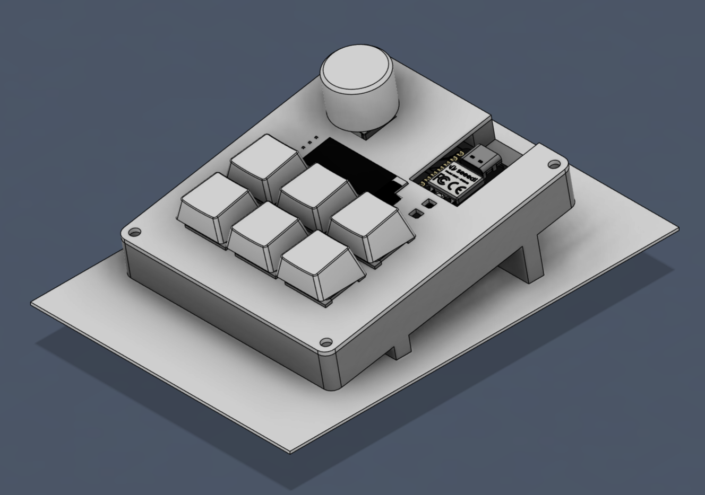

Hi, I'm Mohan East.
I'm Mohan East, a rising junior at Thomas Jefferson High School for Science and Technology (TJHSST) with a passion for mechanical engineering, robotics, and embedded systems. I enjoy designing projects from concept to completion, combining CAD, electronics, programming, and fabrication. This website showcases the projects and experiences that have shaped my engineering journey.
Featured Projects
More detail on the Projects tab.
Custom Macropad
A fully custom macropad with 6 keys, a small screen, and a rotary encoder. I designed the PCB from scratch, made a case for the macropad, and wrote the firmware.

RP2040 Devboard
Used KiCAD to design a devboard using the RP2040 chip.

GridWatch
Built a hackathon-winning power outage prediction site using a Random Forest ML model.